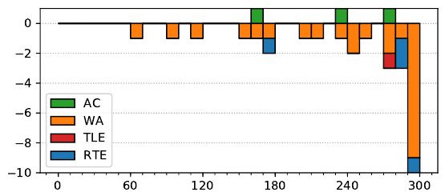

ACM ICPC World Finals 2019
Solved by 3 teams.
First solved after 168 minutes.
Shortest team solution: 3309 bytes.
Shortest judge solution: 3384 bytes.

The solution to the problem has two essentially independent components: a geometric one, where we translate the problem to a non-geometric data-structure problem, and a data structure one, where we actually solve the problem.
The first, geometric part, consists of sorting the tarps in such a way that when water drops from one tarp I to another tarp J, tarp J appears before tarp I. Equivalently, we want a linear extension (a.k.a. topological ordering) of the following partial order (a.k.a. directed acyclic graph): I < J if there exists some x such that ( x, y I ) is on I, ( x, y J ) is on J, and y I < y J . This sorting can be done by a somewhat difficult, but standard, sweep-line algorithm. At any given x, we will maintain a set of the tarps that intersect the vertical line at x, ordered by the ycoordinate of the intersection. This set will also contain two artificial tarps, one for the earth, and one for the sky. Also, with each tarp I in the set we will maintain an ordered list of tarps that have already finished, and need to be before I, but after the predecessor of I in our set; this list will be in correct order. Thus, when we finish, we will be left only with the earth and the sky, and all the tarps will be in the correct order on the list attached to the sky. This can be maintained in amortized logarithmic time when moving to the next interesting x.
Having sorted the tarps so that we know the order in which water flows between the tarps, the problem becomes a non-geometric data structure problem that happens on a onedimensional line. We will have directed intervals (pieces of tarp directed towards the lower end of the tarp) arriving one by one (from lower to higher), and an integer value V ( x ) at each point x of the line. The effect of an interval [ a, b] is to replace the value V ( x ) on each point x ∈ [ a, b] by V 0 ( x ) = min(V (b), minz∈[ x,b] 1 + V (z)) if it is directed towards b, or by V 0 ( x ) = min(V ( a), minz∈[a,x] 1 + V (z)) if it is directed towards a. We want a data structure that allows us to provide initial values for V, update V when intervals arrive, and query for the minimum of V on an interval.
When applying this data structure to the tarps, we get the solution to the problem: we set the initial values V ( x ) to be 0 within our field [`, r ], and ∞ outside. When adding the intervals one by one in the order produced by the geometric sorting phase, this maintains the invariant that V ( x ) equals the minimum cost of getting water from the point ( x, ∞) to our field on the subinstance consisting only of the pieces of tarp added so far. Thus, after processing all the pieces of tarp, V will represent the cost of getting rain falling from the sky (and hitting the first thing on its path) to our field, and so the final output will be the minimum of V on the interval [`, r ].
To implement the desired data structure, we use the following facts about the function V:
This means that to represent and update V, we can use a simple data structure that contains all the points where V changes value and by how much the value changes. Storing this in two sets (one for the non-increasing part, one for the non-decreasing) will allow amortized logarithmic-time updates. At the end, we can perform a linear scan to obtain the final value. (The observation that the function is bitonic is not strictly necessary, but it simplifies the implementation.)